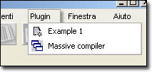

|
 |
<< Previous | Next >> | Table of Contents
6 iReport plugins
From version 0.3.1, iReport supports a plugin system to extend his features. In this chapter we'll learn how to create an iReport plugin and how to deploy it.
An iReport plugin is composed by a descriptor file (an XML document placed in the "plugin" directory) and a set of classes (or a jar) placed in the classpath.
Normally, when plugin is loaded, iReport creates an item in the plugin menu on main frame. Plugins are loaded only on iReport startup. When the plugin menu item is selected, iReport instance the plugin (if not yet instanced) and
call the plagin's call() method.
A plugin is instanced only one time, and in descriptor file it's possible specify to instance it at iReport startup instead to wait for
the first user invokation. This is useful when the plugin is marked as "hidden", and it is not visible on the plugin menu.
|  | | Fig.6.1: The plugin menu on iReport main frame. |
A plugin can be marked as configurable. In this case, the plugin must implement the method configure() that will be executed when the user ask to configure the plugin.
6.1 The abstract iReport plugin
All iReport plugins extends the abstract class it.businesslogic.ireport.plugin.IReportPlugin. This class is really simple:
1
6
7 package it.businesslogic.ireport.plugin;
8
9 import it.businesslogic.ireport.gui.MainFrame;
10
20 public abstract class IReportPlugin {
21
22 MainFrame mainFrame = null;
23 String name = "";
24
25
26
27
30 public abstract void call();
31
32
36 public void configure(){}
37
38
43 public String getName(){
44 return name;
45 }
46
47
51 public it.businesslogic.ireport.gui.MainFrame getMainFrame() {
52 return mainFrame;
53 }
54
55
59 public void setMainFrame(it.businesslogic.ireport.gui.MainFrame mainFrame) {
60 this.mainFrame = mainFrame;
61 }
62
63 }
64
Please note that the ONLY abstract method that must be implemented is call() that is called each time the plugin is invoked from the user.
If you want add a configuration GUI for you plugin, then you must implement the configure() method too.
6.2 The plugin file descriptor
The plugin file descriptor is a file with an arbitrary name that describe a plugin. The main informations
about the plugin are:
- NAME this is the name that will be displayed in the menu item);
- CLASS the plugin class that extendes IReportPlugin;
- ICON FILE an icon used on menu (must be 16x16);
6.3 The hello world plugin
The following example show a really simple plugin that show a simple message when invoked or configured.
1
6
7 package it.businesslogic.ireport.plugin.examples;
8
9
13 public class HelloWorld extends it.businesslogic.ireport.plugin.IReportPlugin {
14
15
16 public HelloWorld() {
17 }
18
19 public void call() {
20 javax.swing.JOptionPane.showMessageDialog(this.getMainFrame(), "Hello from plugin!");
21 }
22
23 public void configure() {
24 javax.swing.JOptionPane.showMessageDialog(this.getMainFrame(), "Hello from plugin configuration!");
25 }
26
27 }
28
|
|
|